Research and Development
Research in Geospatial Sciences, Earth Observation, Space Engineering, Aerospace Engineering, Space Science, Satellite Communication Systems, and GNSS.
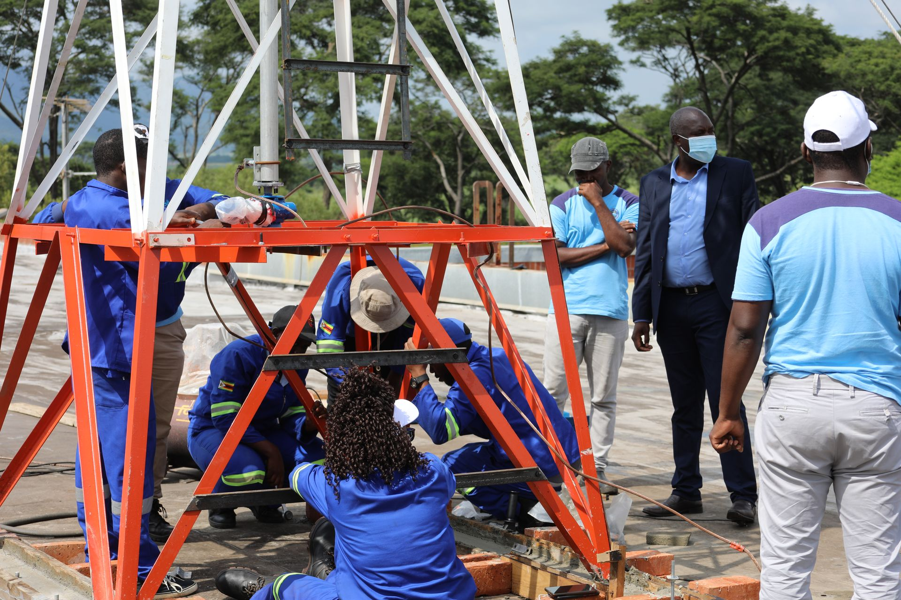
About
Promoting the peaceful use of space and applying geospatial technologies for Zimbabwe’s development.
Overview
The Zimbabwe National Geospatial and Space Agency (ZINGSA) is a wholly government-owned entity established in terms of the Research Act [Chapter 10:22] and officially launched by President Emmerson Mnangagwa in 2021. ZINGSA is responsible for promoting the peaceful use of space and applying geospatial and space technologies to support Zimbabwe’s socio-economic development and industrialization.
Vision, mission & values
To harness space technology for national development of Zimbabwe. We envision a future where space science and geospatial technologies drive sustainable economic growth, enhance agricultural productivity, improve disaster management, and position Zimbabwe as a leading space-faring nation in Africa.
To build Zimbabwe into a space power hub through cutting edge research capable of making innovations and scientific discoveries — developing satellite technologies, advancing geospatial applications, conducting space science research, and building human capacity.
Our Client Service Charter sets out the standards the public can expect from ZINGSA, available in English, Shona, and Ndebele. View service charters.
Mandate
Research in Geospatial Sciences, Earth Observation, Space Engineering, Aerospace Engineering, Space Science, Satellite Communication Systems, and GNSS.

Satellite data and geospatial intelligence for initiatives such as Agro-Ecological Zones, the Wetlands Master Plan, and orderly urban development.

Crop yield estimation, health monitoring, precision agriculture with drones, and agro-ecological mapping for farmers.
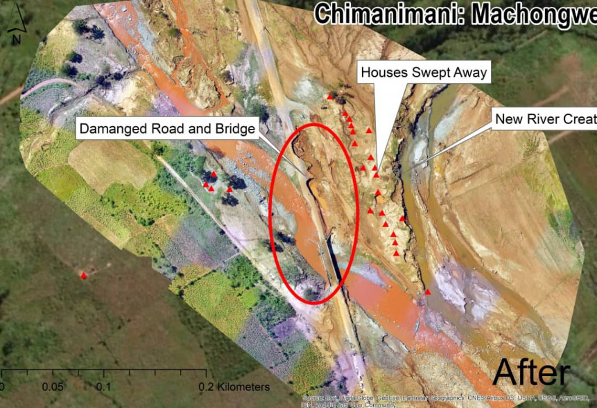
Monitoring veld fires, land degradation, climate variability, and supporting disaster response.

National Spatial Data Infrastructure (NSDI) and the ZINGSACORS Network for accurate real-time positioning.

Training engineers and scientists in space technology and encouraging the return of skilled Zimbabweans abroad.
Achievements

Successfully launched Zimbabwe’s first satellite in November 2022 for drought monitoring, mining mapping, crop health, and weather forecasts.

Zimbabwe’s second satellite mission, expanding national capabilities in space technology and Earth observation.
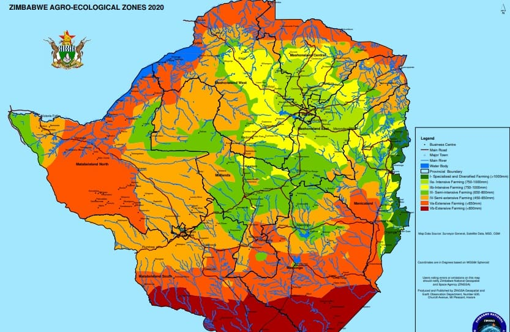
Revised Zimbabwe’s Agro-Ecological Zones using satellite data to support agricultural planning nationwide.
Developed the Zimbabwe Wetlands Master Plan 2021 through extensive satellite-based mapping and analysis.
Established Continuously Operating Reference Stations providing accurate real-time positioning across Zimbabwe.
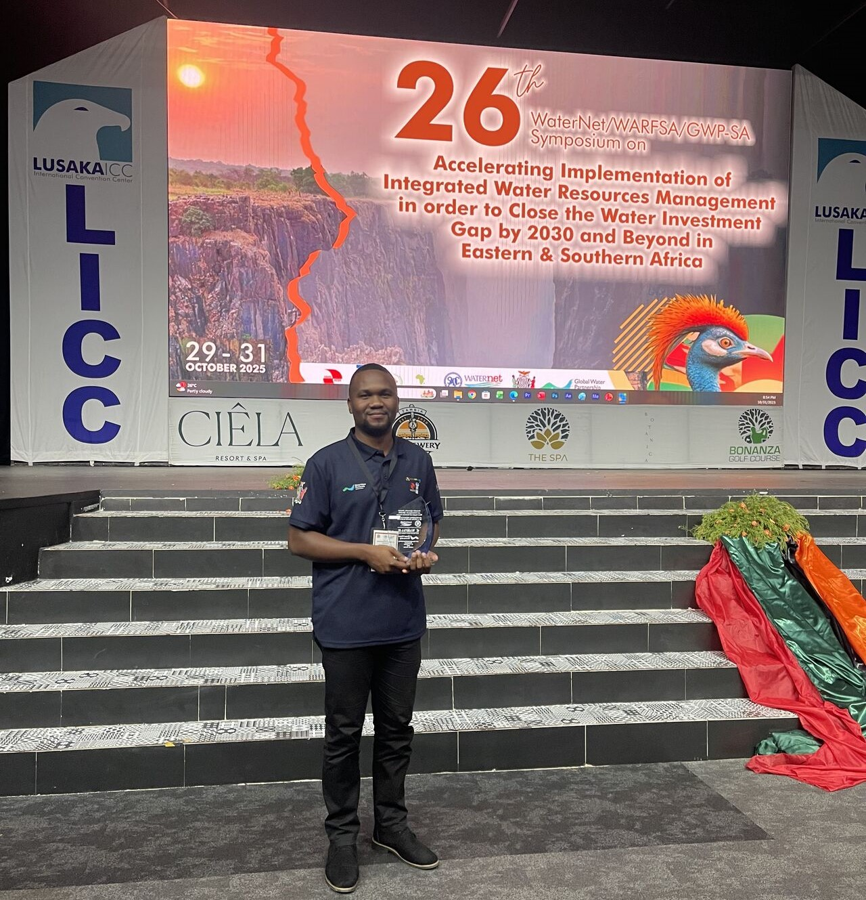
ZINGSA scientists and engineers recognised for outstanding contributions to space science and technology.
Recognition
ZINGSA, in collaboration with ZETDC, received the Presidential Innovation Award for outstanding contributions to technological advancement in Zimbabwe.
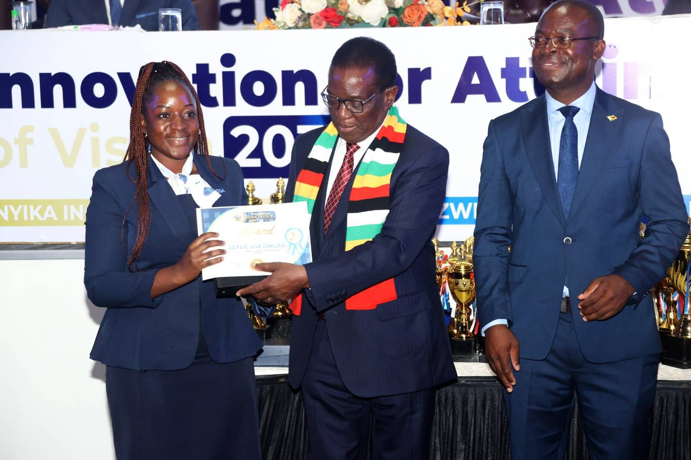
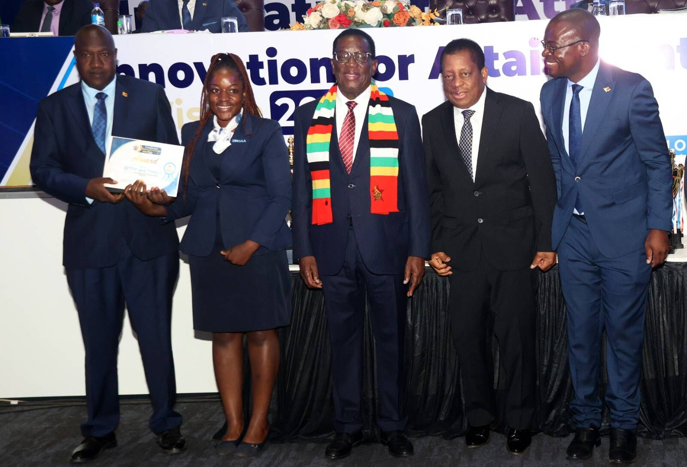
Official launch
ZINGSA was officially launched by His Excellency President Emmerson Mnangagwa, marking a defining moment in Zimbabwe’s space journey.

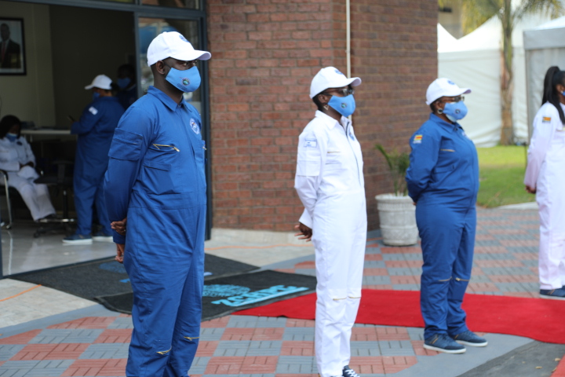
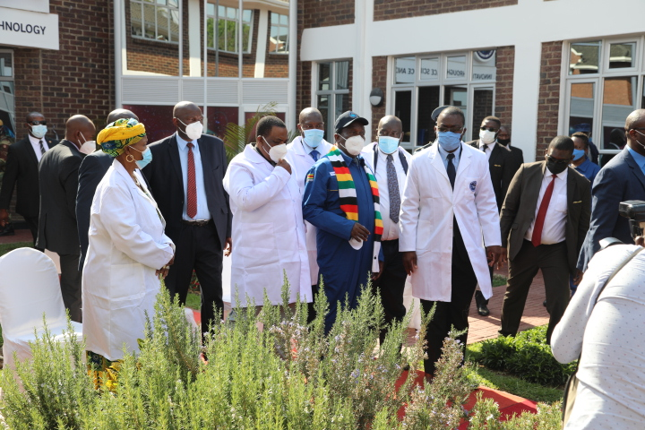
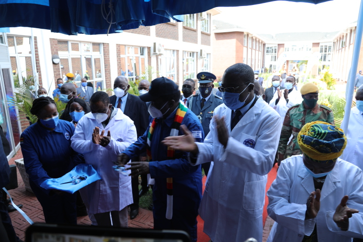
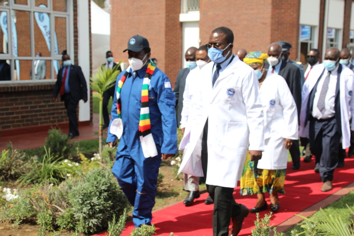
Partnerships
ZINGSA works with international partners, research institutions, and industry leaders to advance space technology and build capacity in Zimbabwe. Our collaborative approach ensures knowledge transfer and access to cutting-edge technologies.
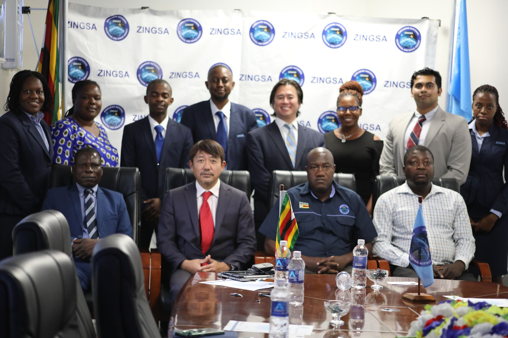